청소년상담사-2급(2교시) (2016-10-01 기출문제)
1과목: 진로상담
1. 진로상담자의 역할에 관한 설명으로 옳은 것은?
- 상담내용에 대해 어떠한 경우라도 비밀을 보장한다.
- 진로상담자로서 지켜야 할 상담윤리를 숙지하고 전문성을 유지한다.
- 진로상담은 심리문제를 다루지 않기 때문에 슈퍼비전을 받을 필요가 없다.
- 연구의 목적으로 상담사례를 발표할 때에는 내담자의 동의를 구하지 않아도 된다.
- 검사를 선택할 때 가급적 표준화검사보다는 인터넷에서 검색하여 체크리스트를 활용한다.
(정답률: 알수없음)

2. 홀랜드(J. Holland)의 성격이론에 관한 설명으로 옳지 않은 것은?
- 행동은 성격과 환경의 상호작용에 의해 결정된다.
- RS 유형은 RI 유형보다 일관성이 더 낮은 수준이다.
- 여섯 가지 유형의 점수가 비슷할수록 변별성이 높다.
- 각 흥미 유형 간의 거리는 그들의 상관관계와 반비례한다.
- S 유형은 청소년상담사로 일을 하는 경우 일치성이 높다.
(정답률: 알수없음)
3. 워크넷(www.work.go.kr)에서 제공하는 직업선호도 검사 L형의 하위검사가 바르게 묶인 것은?
- 흥미검사, 성격검사, 생활사검사
- 흥미검사, 성격검사, 직업적성검사
- 흥미검사, 성격검사, 직업가치관검사
- 흥미검사, 생활사검사, 직업가치관검사
- 흥미검사, 진로발달검사, 직업적성검사
(정답률: 알수없음)
4. 진로의사결정이론에 관한 설명으로 옳지 않은 것은?
- 겔라트(H. Gelatt)는 직업선택과 발달의 과정을 의사결정 순환과정으로 보았다.
- 겔라트(H. Gelatt)의 진로의사결정과정은 목표수립, 정보수집, 목표달성을 위한 전략의 수립, 진로의사결정으로 진행된다.
- 하렌(V. Harren)의 의사결정유형은 합리적 유형, 직관적 유형, 의존적 유형으로 구분된다.
- 하렌(V. Harren)은 진로의사결정과정을 인식, 계획, 확신, 이행의 단계로 구분하였다.
- 타이드만(D. Tiedeman)과 오하라(R. O'Hara)는 진로의사결정과정을 탐색, 결정화, 구체화의 단계로 구분하였다.
(정답률: 알수없음)
5. 사이버 진로상담에 관한 설명으로 옳지 않은 것은?
- 상담이 익명으로 이루어질 수 있다.
- 상담이 대부분 상담자 주도적으로 이루어진다.
- 상담자와 내담자의 시ㆍ공간적 제약을 극복할 수 있다.
- 상담내용과 정보의 저장 및 가공이 용이하다.
- 다양한 진로상담의 형태로 변형하거나 보조역할을 할 수 있다.
(정답률: 알수없음)
6. 크럼볼츠(J. Krumboltz)가 제안한 사회학습진로이론의 설명으로 옳은 것을 모두 고른 것은?
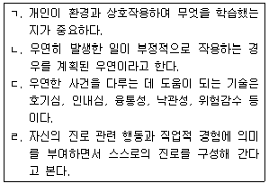
- ㄱ, ㄷ
- ㄴ, ㄷ
- ㄴ, ㄹ
- ㄱ, ㄷ, ㄹ
- ㄱ, ㄴ, ㄷ, ㄹ
(정답률: 알수없음)
7. 국가직무능력표준(NCS)에서 제시한 직업기초능력에 해당하지 않는 것은?
- 문제해결능력
- 의사소통능력
- 수리능력
- 정보능력
- 외국어능력
(정답률: 알수없음)
8. 특성-요인이론에 관한 평가로 옳은 것을 모두 고른 것은?
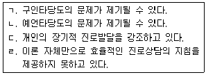
- ㄱ, ㄹ
- ㄴ, ㄷ
- ㄴ, ㄹ
- ㄱ, ㄴ, ㄹ
- ㄴ, ㄷ, ㄹ
(정답률: 알수없음)
9. 다음에서 설명하고 있는 진로상담 면담방법은?
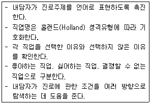
- 알파벳 연습
- 진로가계도 활동
- 직업카드분류 활동
- 역할모델 탐색 활동
- 과거의 선택 탐색 활동
(정답률: 알수없음)
10. 진로상담자가 다음의 평가를 통해 파악하고자 하는 내담자의 특성은?
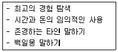
- 가치
- 적성
- 성격
- 흥미
- 역할
(정답률: 알수없음)
11. 아들러(A. Adler)의 개인심리학에 기반한 생애진로사정(LCA)의 설명으로 옳지 않은 것은?
- 정보를 수집하는 초기단계에서 유용하다.
- 내담자 자신에 대해 구체적으로 알 수 있다.
- 내담자의 강점을 저해하는 장애를 발견할 수 있다.
- 내담자를 객관적으로 파악할 수 있는 표준화된 검사도구이다.
- 구조는 진로사정, 전형적인 하루, 강점과 장애, 요약으로 구성되어 있다.
(정답률: 알수없음)
12. 학자와 주요 이론(개념)의 연결이 옳은 것은?
- 브라운(D. Brown) - 실재 구성, 역할 수행, 결정 구체화하기
- 크럼볼츠(J. Krumboltz) - 관심, 통제, 호기심, 자신감
- 투크만(B. Tuckman) - 자아인식, 진로인식, 진로의사결정
- 다위스(R. Dawis)와 롭퀴스트(L. Lofquist) - 흥미, 곤란도, 책무성
- 갓프레드슨(L. Gottfredson) - 유전적 특성, 환경적 조건과 사건들, 학습경험, 과제접근기술
(정답률: 알수없음)
13. 홀랜드(J. Holland)가 제시한 여섯 가지 성격유형과 그 특징의 연결이 옳은 것은?
- 현실적 유형(R): 정확하고, 빈틈이 없고, 조심성이 있다.
- 탐구적 유형(I): 개방적이고, 감정이 풍부하고, 자유분방하다.
- 예술적 유형(A): 탐구심이 많고, 논리적이고, 학구적이다.
- 기업적 유형(E): 소박하고, 솔직하고, 성실하다.
- 관습적 유형(C): 계획적이고, 검소하고, 질서정연하다.
(정답률: 알수없음)
14. 갓프레드슨(L. Gottfredson)의 제한과정 4번째 단계에 관한 설명으로 옳은 것을 모두 고른 것은?
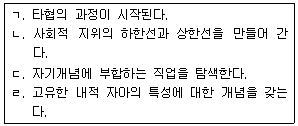
- ㄱ, ㄴ
- ㄷ, ㄹ
- ㄱ, ㄴ, ㄹ
- ㄱ, ㄷ, ㄹ
- ㄱ, ㄴ, ㄷ, ㄹ
(정답률: 알수없음)
15. 수퍼(D. Super)의 생애진로발달 이론에서 탐색단계의 특성을 모두 고른 것은?
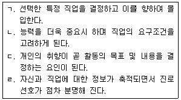
- ㄱ
- ㄱ, ㄹ
- ㄴ, ㄷ
- ㄴ, ㄷ, ㄹ
- ㄱ, ㄴ, ㄷ, ㄹ
(정답률: 알수없음)
16. 수퍼(D. Super)의 생애진로발달 이론의 진로상담 목표로 옳지 않은 것은?
- 자기개념 분석하기
- 진로성숙 수준 확인하기
- 수행결과에 대한 비현실적 기대 확인하기
- 진로발달과제를 수행하는데 필요한 지식, 태도, 기술 익히기
- 자신의 흥미, 능력, 가치를 확인하고 생애 역할과 연계하여 이해하기
(정답률: 알수없음)
17. 다음의 설명에서 ( )에 들어갈 용어는?
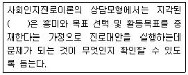
- 과거수행
- 환경적 배경
- 진로장벽
- 성격
- 학습경험
(정답률: 알수없음)
18. 다음에서 설명하는 내용을 탐색할 수 있는 적절한 진로상담 도구는?
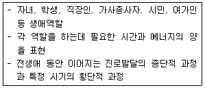
- 아치웨이
- 취업로드 맵
- 진로수레바퀴
- 원형검사
- 진로무지개
(정답률: 알수없음)
19. 사회인지진로이론 중 흥미발달모형에 관한 설명으로 옳지 않은 것은?
- 결과기대는 흥미에 영향을 미친다는 것을 보여준다.
- 흥미는 활동목표에 영향을 미친다는 것을 보여준다.
- 자기효능감과 결과기대는 활동목표에 영향을 미친다는 것을 보여준다.
- 학습경험은 자기효능감과 결과기대에 영향을 미친다는 것을 보여준다.
- 목표는 활동의 선택 및 실행에 영향을 미친다는 것을 보여준다.
(정답률: 알수없음)
20. 자기효능감이 낮은 청소년을 진로상담 할 때 전략으로 옳은 것을 모두 고른 것은?
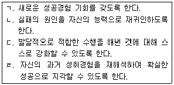
- ㄱ, ㄴ
- ㄱ, ㄷ
- ㄷ, ㄹ
- ㄱ, ㄷ, ㄹ
- ㄱ, ㄴ, ㄷ, ㄹ
(정답률: 알수없음)
21. 다음 하위요인으로 구성된 척도는?
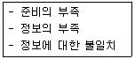
- 진로미결정척도(Career Decision Difficulties Questionnaire)
- 진로결정척도(Career Decision Scale)
- 직업결정척도(Vocational Decision Scale)
- 진로상황검사(My Vocational Situation)
- 진로의사결정평가(Assessment of Career Decision Making)
(정답률: 알수없음)
22. 청소년진로상담자가 진로정보와 검사를 제공하는 웹사이트를 활용할 때 고려해야 할 사항이 아닌 것은?
- 사회적으로 공인된 기관에서 출연하였는가?
- 탑재된 심리검사는 신뢰도와 타당도를 갖추었는가?
- 자료는 지속적으로 업데이트 하는가?
- 사용자의 학력수준이 높고 이용횟수가 많은가?
- 검사나 서비스 사용에 비용이 드는가?
(정답률: 알수없음)
23. 수퍼(D. Super)가 제안한 여성의 진로패턴에 관한 설명의 연결이 옳은 것은?
- 안정적 전업주부 진로패턴(stable homemaking career pattern): 학교 졸업 후 취업을 하지만 결혼 후 가사에 전념 함
- 일 지속형 진로패턴(stable working career pattern): 학교 졸업 후 전생애에 걸쳐 지속적으로 일을 함
- 일-가사 양립 진로패턴(double tracking career pattern): 일을 하다가 결혼을 하면 중단하고 자녀양육이 끝난 후 다시 시작 함
- 단절 진로패턴(interrupted career pattern): 전 생애에 걸쳐 일과 가사를 병행 함
- 불안정한 진로패턴(unstable career pattern): 확고한 일의 종류 없이 일을 함
(정답률: 알수없음)
24. 다음 대화에서 청소년 진로상담자가 '생애주제'를 다루는 데 적용한 진로상담이론과 학자의 연결이 옳은 것은?
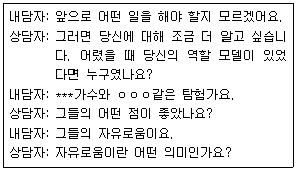
- 인지정보처리모델: 샘슨(J. Sampson), 피터슨(G. Peterson)
- 갈등모델이론: 야니스(I. Janis), 만(L. Mann)
- 기대모델이론: 브룸(V. Vroom)
- 발달이론: 긴즈버그(E. Ginzberg)
- 진로구성이론: 사비카스(M. Savickas)
(정답률: 알수없음)
25. 갓프레드슨(L. Gottfredson)의 타협과정에 관한 설명으로 옳은 것은?
- 자신에게 맞지 않는 직업을 배제하는 과정이다.
- 직업의 성역할, 사회적 지위, 흥미가 타협되는 과정이다.
- 수용 가능한 진로대안 영역을 축소하는 과정이다.
- 진로선택을 통해 일차적으로 심리적 자아실현을 달성하는 과정이다.
- 타협의 정도가 낮을 때는 성역할 적합성을 중요시 한다.
(정답률: 알수없음)
2과목: 집단상담
26. 비구조화 집단에 관한 설명으로 옳은 것을 모두 고른 것은?
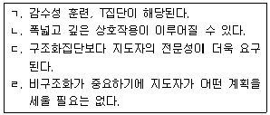
- ㄱ, ㄴ
- ㄷ, ㄹ
- ㄱ, ㄴ, ㄷ
- ㄴ, ㄷ, ㄹ
- ㄱ, ㄴ, ㄷ, ㄹ
(정답률: 알수없음)
27. 성장 집단상담에 관한 설명으로 옳지 않은 것은?
- 비교적 정상범위의 적응 수준을 가진 사람을 대상으로 한다.
- 인원은 8-12명 정도가 적당하나, 대상자 특성에 따라 달라질 수 있다.
- 집단원 간의 역동적 상호작용을 통한 변화와 성장을 지향한다.
- 내용이나 정보 전달에 초점을 두고 지도자가 책임과 주도성을 갖고 진행한다.
- 지도자와 집단원이 정기적으로 만나 상호 수용적 분위기에서 진행한다.
(정답률: 알수없음)
28. 집단상담의 치료적 요인에 관한 설명으로 옳지 않은 것은?
- 다른 집단원에게 도움을 주는 이타성은 치료적 요인이다.
- 자기이해에 기반한 통찰력은 청소년에게 가장 도움이 되는 치료적 요인이다.
- 자신에 대한 다른 사람의 지각을 듣는 피드백 경험은 중요한 치료적 요인이다.
- 특정 경험의 의미를 설명, 해석, 명료화하는 인지적 요소는 치료적 요인으로 작용한다.
- 타인을 통해 받을 수 있는 지지와 도움에 한계가 있고 고통은 피할 수 없음을 인식하는 것은 치료적 요인이 될 수 있다.
(정답률: 알수없음)
29. 행동으로 모범을 보이거나 설명을 통해 돕는 것을 집단상담자의 가장 중요한 역할로 제시한 참만남집단 모형은?
- 스톨러(Stoller) 모형
- 얄롬(Yalom) 모형
- 하르트만(Hartman) 모형
- 슈츠(Schutz) 모형
- 로저스(Rogers) 모형
(정답률: 알수없음)
30. 다음의 기법이나 개념이 강조되는 집단상담 접근은?
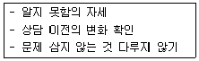
- 게슈탈트 집단상담
- 교류분석 집단상담
- 개인심리 집단상담
- 심리극적 집단상담
- 해결중심 집단상담
(정답률: 알수없음)
31. 집단상담 과정에서 윤리적으로 문제가 될 수 있는 내용이 아닌 것은?
- 적합한 상담자 의뢰가 어려워 자신의 학생에게 고지된 동의를 받고 상담 기록을 하면서 자문, 지도감독을 받으며 진행했다.
- 집단원이 매회 가져오는 꽃이나 케이크를 작은 정성으로 여겨 받았다.
- 개인의 비밀을 카드에 익명으로 쓰게 한 후, 무작위로 뽑아 발표하면서 누구의 비밀인지 알게 되었다.
- 미진한 성과를 얻은 집단원을 상담 종결 후 다른 상담자에게 의뢰했으나, 이를 거부한 집단원에게 상담 받을 것을 재차 요구했다.
- 법정 전염병에 걸린 집단원이 편안하게 집단에 참여하도록 이에 대한 비밀을 유지하였다.
(정답률: 알수없음)
32. 다음은 어떤 초점화(focusing) 개입인가?
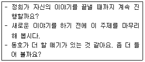
- 초점 유지
- 초점 확립
- 초점 이동
- 초점 심화
- 초점 일반화
(정답률: 알수없음)
33. 정신분석 집단상담에 관한 설명으로 옳지 않은 것은?
- 전이와 저항에 주의를 기울이며 해석을 통해 집단원의 통찰을 돕는다.
- 전이 분석이 주로 이루어지므로 집단은 비슷한 특성을 지닌 사람들로 구성하는 것이 좋다.
- 집단원들이 다른 집단원의 문제를 듣고 반응하면서 보조 혹은 공동상담자 역할을 수행하기도 한다.
- 슬랩손(S. Slavson)은 집단상담자의 기능으로 지도, 자극, 확충, 해석 기능을 제시했다.
- 개인분석과 달리 대인관계 양상을 분석한 후 개인의 내적 심리과정을 분석한다.
(정답률: 알수없음)
34. 집단상담자의 자질을 인성적 특성과 전문적 특성으로 구분할 때, 전문적 특성을 모두 고른 것은?
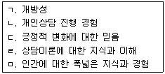
- ㄱ, ㄴ
- ㄹ, ㅁ
- ㄱ, ㄷ, ㅁ
- ㄴ, ㄹ, ㅁ
- ㄱ, ㄴ, ㄷ, ㄹ, ㅁ
(정답률: 알수없음)
35. 청소년 집단상담의 계획, 실시, 평가에 관한 설명으로 옳은 것은?
- 집단 계획서는 사전검사 실시 후 완성한다.
- 효과의 극대화를 위해 회기 당 활동을 최대한 많이 구성한다.
- 집단 계획 절차에서 가장 먼저 하는 것은 부모나 보호자의 승인을 받는 것이다.
- 평가의 객관성을 위해 집단평가는 심리검사 등을 통한 수치화된 정보로만 이루어져야 한다.
- 집단 진행을 효율적으로 하기 위해 집단의 규모, 장소, 모임 시간과 빈도 등에 대해 구체적으로 계획한다.
(정답률: 알수없음)
36. 다음의 집단상담 기법에 관한 설명으로 옳은 것은?
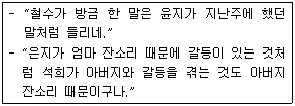
- 개인상담과 집단상담에서 모두 자주 사용한다.
- 집단원 간의 차이점을 드러낼 때 사용한다.
- 집단의 상호작용과 응집력을 증가시키는 효과가 있다.
- 모호하거나 모순된 진술을 드러내는 직면 효과가 있다.
- 현상이나 문제에 대한 상담자의 관점이나 의견을 드러낸다.
(정답률: 알수없음)
37. 효율적이고 현장 적용성이 높은 청소년 집단상담의 특성으로 옳은 것을 모두 고른 것은?
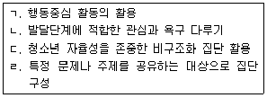
- ㄱ, ㄴ
- ㄱ, ㄴ, ㄹ
- ㄱ, ㄷ, ㄹ
- ㄴ, ㄷ, ㄹ
- ㄱ, ㄴ, ㄷ, ㄹ
(정답률: 알수없음)
38. 집단 상담에서 침묵 상황에 대한 효과적 개입으로 옳지 않은 것은?
- 회기 초기에 오랜 침묵을 허용하는 것은 지도력 발휘가 안된 것이다.
- 생산적으로 여겨지는 침묵 상황에서 말하려는 집단원에게 기다리라고 제지할 수 있다.
- 말하고 싶으나 기회를 잡지 못하는 집단원에게 말할 기회를 준다.
- 짝지어 말하기나 돌아가면서 말하기 등의 구조화 개입으로 침묵하는 집단원의 참여를 이끈다.
- 대리학습이나 경험이 되므로 침묵하는 집단원이 집단 내내 말하지 않더라도 그대로 놔둔다.
(정답률: 알수없음)
39. 게슈탈트 집단상담에서 다루는 저항의 유형과 표현 양상의 연결이 옳지 않은 것은?
- 융합(confluence): 자신의 의견을 말하거나 자신을 표현하는 것을 어려워한다.
- 반전(retroflection): 집단 초기 정서 표현이나 참여를 주저한다.
- 내사(introjection): 상담자 개입이나 규칙에 의문을 제기하지 않는다.
- 투사(projection): 집단 통제 경향을 보이는 집단원이 자신이 아니라 다른 집단원이 그렇다고 주장한다.
- 편향(deflection): 다른 집단원이 자신과 동일한 생각과 감정을 경험한다고 생각하며, 특정 집단원을 향한 강한 정서를 경험한다.
(정답률: 알수없음)
40. 현실치료 집단상담에 관한 설명으로 옳은 것은?
- 집단원의 바람이나 욕구 달성에서 3R은 책임감(Responsibility), 현실성(Reality), 합리성(Rationality)을 뜻한다.
- 전 행동(total behavior) 변화는 사고-감정-생리-행동 순으로 개입할 때 용이하다.
- 지각이 행동을 통제한다는 통제이론에 기초한다.
- 역설적 기법을 통해 집단원은 행동에 대한 통제와 선택 가능성을 자각할 수 있다.
- 집단원의 현재 행동에 대한 논의를 장려하고, 비효과적 행동의 해명 기회를 제공한다.
(정답률: 알수없음)
41. 효율적인 집단 구성에 관한 설명으로 옳지 않은 것은?
- 심리치료집단은 성격 구조 재구성이 목적이므로 상이한 진단을 받은 이질집단 구성이 유용하다.
- 심리교육집단은 특정 주제에 초점을 둔 구조화된 집단으로 진행할 때 유용하다.
- 성장집단은 성장 지향이 목적이므로 이질집단 구성과 비구조화된 회기가 유용하다.
- 지지집단은 정서적 지지가 목적이므로 동질집단 구성이 유용하다.
- 자조집단은 상호 지지가 목적이므로 특정 주제를 가진 동질집단 구성이 유용하다.
(정답률: 알수없음)
42. 집단상담 초기 단계에서 집단상담자의 역할로 옳은 것을 모두 고른 것은?
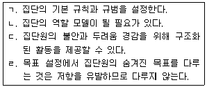
- ㄱ, ㄴ
- ㄷ, ㄹ
- ㄱ, ㄴ, ㄷ
- ㄴ, ㄷ, ㄹ
- ㄱ, ㄴ, ㄷ, ㄹ
(정답률: 알수없음)
43. 중도 탈락 집단원이 발생하는 경우 개입으로 옳지 않은 것은?
- 떠나려는 집단원에게 남으라는 압박이 가해질 경우, 이를 저지한다.
- 법정 명령으로 참여한 경우 그만두는 결정에 따른 결과와 후속 조치에 대해 설명한다.
- 그만두는 이유를 묻는 것은 압력이 될 수 있으므로 지양한다.
- 남겨진 집단원들이 경험할 수 있는 사고와 감정을 탐색한다.
- 떠나려는 의사를 존중하면서 신중히 고려할 시간을 갖도록 권유한다.
(정답률: 알수없음)
44. 청소년 집단상담에 관한 설명으로 옳지 않은 것은?
- 청소년 언어와 문화에 대한 이해와 감수성이 필요하다.
- 상담자의 사생활 관련 질문을 할 경우 집단 규칙을 벗어나므로 주의를 준다.
- 비자발적으로 참여한 경우 개별 면담을 통해 참여에 대한 감정이나 생각을 탐색한다.
- 집단원들이 회기 밖에서 관계를 맺는 것이 집단 역동에 미치는 영향에 대해 논의한다.
- 비협조적인 경우 과거 상담 경험 등을 탐색한다.
(정답률: 알수없음)
45. 집단상담에서 효과적이지 않은 집단원의 행동을 모두 고른 것은?
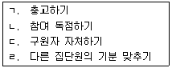
- ㄱ, ㄴ
- ㄷ, ㄹ
- ㄱ, ㄴ, ㄹ
- ㄴ, ㄷ, ㄹ
- ㄱ, ㄴ, ㄷ, ㄹ
(정답률: 알수없음)
46. 집단상담의 작업단계에 관한 설명으로 옳지 않은 것은?
- 자발적 자기개방이 증가한다.
- 집단원의 불안이 감소하면서 비방어적으로 상호작용하므로 갈등은 나타나지 않는다.
- 지금-여기에 초점을 두고 원활하게 소통이 이루어진다.
- 집단 신뢰와 결속력이 높아져 실험적 행동도 시도한다.
- 상담자에 대한 전이로 인해 집단원의 도전 행동이 나타날 수 있다.
(정답률: 알수없음)
47. 종결단계에서 이루어지는 상담자 피드백으로 유용하지 않은 것을 모두 고른 것은?
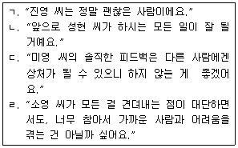
- ㄱ, ㄴ
- ㄴ, ㄷ
- ㄷ, ㄹ
- ㄱ, ㄴ, ㄷ
- ㄱ, ㄴ, ㄷ, ㄹ
(정답률: 알수없음)
48. 집단상담에서 비밀유지에 관한 설명으로 옳은 것은?
- 비밀유지 한계를 공지하여 집단원이 자기 개방 수위를 결정하게 한다.
- 자신의 집단 경험을 집단 밖에서 공유하는 과정에서 다른 집단원이 말한 내용을 노출하는 것은 허용된다.
- 집단 작업에 비밀유지가 필수이므로 어떤 경우라도 집단 내용이 외부로 노출되어서는 안 된다.
- 미성년자의 경우 부모와의 협력이 중요하므로, 작업 내용을 부모와 정기적으로 공유한다.
- 집단원의 비밀유지 의무는 강제할 수 없으므로, 상담자에게만 적용된다.
(정답률: 알수없음)
49. 종결단계의 집단상담자 과제에 관한 설명으로 옳지 않은 것은?
- 종결에 대한 감정을 탐색하고 다룬다.
- 종결 시점을 알리며 마무리 못한 과제를 다룰 기회를 준다.
- 집단원의 달성하지 못한 목표에 대한 언급은 실패감을 줄 수 있으므로 지양한다.
- 집단에서 배운 내용을 일상생활에 적용하도록 돕는다.
- 필요시 상담 종결 후 추수 모임을 제공한다.
(정답률: 알수없음)
50. 아들러(A. Adler)의 개인심리 집단상담에 관한 설명으로 옳지 않은 것을 모두 고른 것은?
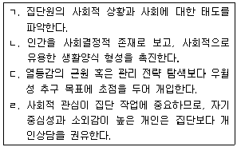
- ㄱ, ㄴ
- ㄷ, ㄹ
- ㄱ, ㄴ, ㄹ
- ㄴ, ㄷ, ㄹ
- ㄱ, ㄴ, ㄷ, ㄹ
(정답률: 알수없음)
3과목: 가족상담
51. 가족상담의 특성에 관한 설명으로 옳은 것은?
- 기계론적 세계관에 기초한다.
- 내담자 내면세계의 변화에 일차적 초점을 둔다.
- 내담자를 반응적이고 수동적인 존재로 이해한다.
- '이것 아니면 저것' 이라는 이분법적 입장을 취한다.
- 증상은 역기능적 상호작용의 결과라고 가정한다.
(정답률: 알수없음)
52. 가족상담 초기에 평가하는 항목이 아닌 것은?
- 전이, 역전이
- 가족의 강점
- 혼외관계 여부
- 발달주기 단계와 과업
- 문제 유지에 기여하는 가족원의 역할
(정답률: 알수없음)
53. 가족상담자가 지켜야 할 윤리에 관한 내용으로 옳은 것을 모두 고른 것은?
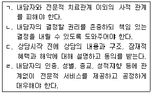
- ㄱ, ㄴ, ㄷ
- ㄱ, ㄴ, ㄹ
- ㄱ, ㄷ, ㄹ
- ㄴ, ㄷ, ㄹ
- ㄱ, ㄴ, ㄷ, ㄹ
(정답률: 알수없음)
54. 가족체계이론에 관한 설명으로 옳은 것은?
- 가족체계는 선형적인 인과관계를 가진다.
- 가족의 하위체계들은 상호작용하면서도 각 체계의 고유한 특성을 가진다.
- 리츠(T. Lidz)는 '체계는 부분들의 합보다 크다'는 생각을 주창하였다.
- 체계를 구성하고 있는 각 요소만 탐색하면 전체 체계를 이해할 수 있다.
- 가족체계는 여러 하위체계들로 구성되어 있으나, 가족원은 하나의 하위체계에만 속한다.
(정답률: 알수없음)
55. 가족 의사소통에 대한 가족상담자의 효과적인 개입으로 옳지 않은 것은?
- 여러 가족원이 동시에 말하는 경우: 특정 가족 구성원을 지정하여 질문하였다.
- 아무도 말하지 않는 경우: 가족 상호작용이 원만하지 않기 때문인지 자신의 생각이나 감정을 억압하기 때문인지 원인을 파악하였다.
- 다른 가족원 대신 말하는 경우: 표현을 잘 못하는 가족원을 대신하여 말해주도록 격려하였다.
- 다른 가족원을 비난하는 경우: 자신의 감정과 생각을 감정반사적이지 않게 표현하도록 하였다.
- 가족원들이 상담자에게만 말하는 경우: 가족 간의 상호작용이 중요하므로 직접 표현하도록 하였다.
(정답률: 알수없음)
56. 가족 평가에서 탐색해야하는 가족 특성에 관한 설명으로 옳지 않은 것은?
- 가족규칙: 가족행동을 설정하는 관계상의 합의이다.
- 경계선: 밀착된 가족의 경계선은 경직되어 있다.
- 가족신화: 가족의 항상성을 유지하는 데 기여할 수 있다.
- 부모화: 부모화된 아동은 자기 나이보다 책임감과 능력 등이 발달되는 경향이 있다.
- 가족의례: 삶의 과정을 통해 세대 및 가족 간의 연결고리를 제공한다.
(정답률: 알수없음)
57. 가족상담의 종결을 고려하는 지표로 옳지 않은 것은?
- 호소증상이 완화되거나 소멸된 경우
- 가족과 합의된 상담 목표가 달성된 경우
- 가족의 규칙과 구조가 합리적이고 유연하게 변화된 경우
- 상담자가 가족원들과 치료적 관계를 형성한 경우
- 가족 간 의사표현이 명료하고 갈등 협상 능력이 생긴 경우
(정답률: 알수없음)
58. 가정폭력 가족상담에 관한 설명으로 옳지 않은 것은?
- 표현적 폭력의 경우 상보성을 띄지 않으며 피해자와 가해자의 역할이 정해져 있다.
- 지속적인 폭력의 경우에는 개인 내적인 문제뿐만 아니라 가족의 역동도 이해하고 개입해야 한다.
- 상담과정에서 부부 간 폭력이 드러난 경우 자녀에 대한 폭력 여부를 확인해야 한다.
- 폭력으로 인한 아동기 우울증은 성인기 이후의 적응까지 장기적으로 영향을 미친다.
- 가정폭력 가해자는 상담자나 권위적 대상과의 관계에서 어려움을 겪을 수 있다.
(정답률: 알수없음)
59. 기능적 가족의 특성에 관한 설명으로 옳은 것을 모두 고른 것은?
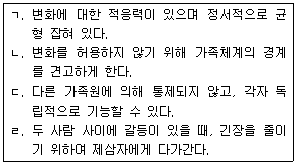
- ㄱ, ㄷ
- ㄴ, ㄹ
- ㄱ, ㄴ, ㄷ
- ㄴ, ㄷ, ㄹ
- ㄱ, ㄴ, ㄷ, ㄹ
(정답률: 알수없음)
60. 가족생활주기 중 청소년기 자녀 가족의 특성 및 과제에 관한 설명으로 옳은 것을 모두 고른 것은?
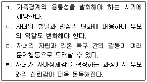
- ㄱ, ㄴ
- ㄷ, ㄹ
- ㄱ, ㄴ, ㄷ
- ㄴ, ㄷ, ㄹ
- ㄱ, ㄴ, ㄷ, ㄹ
(정답률: 알수없음)
61. 다음 사례에 적용할 수 있는 상담접근방법에 관한 설명으로 옳지 않은 것은?
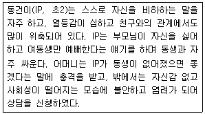
- 가족조각: IP가 지각하고 있는 가족관계와 상호작용 패턴을 확인할 수 있다.
- 빙산작업: IP의 문제 행동 밑에 있는 감정과 욕구를 탐색하고 이해한다.
- 동적가족화: IP가 지각하고 있는 가족들의 태도, 감정, 행동을 확인할 수 있다.
- 탈삼각화: 어머니가 삼각관계에 끼여 있음을 인식시키고 어머니가 주도적으로 남매의 갈등을 해결하도록 한다.
- 가계도 탐색: 어머니가 경험하고 있는 불안의 원인을 탐색하기 위해 원가족에서의 관계 경험을 살펴본다.
(정답률: 알수없음)
62. 가족상담 초기 개념에 관한 설명으로 옳지 않은 것은?
- 고무울타리는 가족을 둘러싼 경계가 자신들의 편의에 따라 넓어지기도 하고 축소되기도 하는 것이다.
- 부부가 균열(marital schism)된 가족에서는 자녀들이 종종 부부갈등의 중재자 역할을 하게 된다.
- 이중구속 메시지는 논리적으로 상호 모순되며 일치하지 않는 두 가지 메시지를 동시에 전달하는 것이다.
- 부부가 불균형(marital skew)한 경우는 파워경쟁을 하면서 거의 모든 영역에서 의견을 달리하거나 다툼을 일으킨다.
- 거짓친밀성을 드러내는 가족에서는 가족원 모두 결속된 모습을 보여야 하기 때문에 역할에 융통성이 없고 유머와 자발성이 부족하다.
(정답률: 알수없음)
63. 가족상담자와 상담목표를 연결한 것으로 옳지 않은 것은?
- 사티어(V. Satir): 내담자가 자기 삶에 대한 선택을 하도록 한다.
- 보웬(M. Bowen): 내담자가 정서체계에 따라 행동하고 반응하게 한다.
- 화이트(M. White): 단기적으로 내담자 가족이 호소하는 문제를 감소시킨다.
- 미뉴친(S. Minuchin): 불균형(unbalancing)으로 하위체계 내 위계를 변화시켜 재구조화한다.
- 보스조르메니 나지(I. Boszormenyi-Nagy): 관계에서 상호성에 대한 기대와 공평성을 도모한다.
(정답률: 알수없음)
64. 가족상담모델에서 상담자의 역할에 관한 설명으로 옳은 것을 모두 고른 것은?
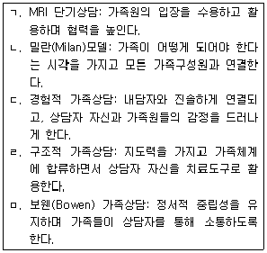
- ㄱ, ㄴ, ㅁ
- ㄴ, ㄷ, ㄹ
- ㄱ, ㄷ, ㄹ, ㅁ
- ㄴ, ㄷ, ㄹ, ㅁ
- ㄱ, ㄴ, ㄷ, ㄹ, ㅁ
(정답률: 알수없음)
65. 다음 사례에 대한 가족상담 사례개념화에 관한 설명으로 옳지 않은 것은?
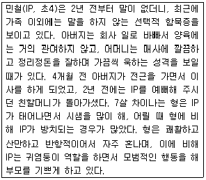
- IP 증상은 갑작스러운 환경 변화에 기인할 수 있다.
- IP는 말을 하지 않음으로써 부모의 관심을 끌 수 있다.
- 나이 차가 있어 형제간 위계질서는 세워져 있는 편이다.
- IP 증상은 부모의 일관되지 못한 양육태도에 기인할 수 있다.
- 친조모 상실감에 대한 애도가 충분히 이루어지지 않은 것으로 보인다.
(정답률: 알수없음)
66. 해결중심 단기상담의 목표에 관한 설명으로 옳은 것은?
- 지금-여기에서 큰 변화를 가져오도록 한다.
- 목표는 목적지가 아니라 시작하는 첫 단계이다.
- 청소년기 자녀가 '학교에 덜 지각하기'를 목표로 한다.
- 상담자가 중요하다고 진단하는 것으로 목표를 정한다.
- 부모와 갈등이 많은 자녀가 '가족과 행복하게 살기'를 목표로 한다.
(정답률: 알수없음)
67. 신경성 식욕부진증 청소년 자녀가 있는 가족의 특성에 관한 설명으로 옳은 것을 모두 고른 것은?
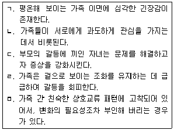
- ㄱ, ㄷ
- ㄴ, ㄹ, ㅁ
- ㄱ, ㄴ, ㄷ, ㅁ
- ㄴ, ㄷ, ㄹ, ㅁ
- ㄱ, ㄴ, ㄷ, ㄹ, ㅁ
(정답률: 알수없음)
68. 상담자 반응에 사용된 가족상담모델과 기법의 연결로 옳은 것은?
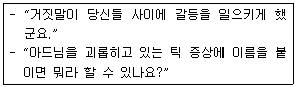
- 보웬가족상담 – 과정질문
- 경험적 가족상담 – 빙산질문
- 해결중심단기치료 – 관계성 질문
- 전략적 가족상담 – 역설적 질문
- 이야기치료 – 문제외재화 질문
(정답률: 알수없음)
69. 가족상담 체계이론에 관한 설명으로 옳은 것은?
- 가족상담은 일반체계이론과 사이버네틱스(cybernetics)를 토대로 태동되었다.
- 다중귀결성(multifinality)은 여러 방법으로 동일한 최종 목표에 도달하는 능력을 뜻한다.
- 가족체계는 유기적으로 연결되어 있기 때문에, 문제가 되는 부분만 제거하고 고친다.
- 안정지향성(morphostasis)은 체계가 안정의 맥락에서 성장과 변화를 허용하려는 성향을 의미한다.
- 부적피드백은 가족체계가 어떤 파괴 상황에 직면해서 부정적 결과를 가져올 때를 말한다.
(정답률: 알수없음)
70. 다음에서 구조적 가족상담자가 활용한 기법은?
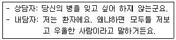
- 추적
- 실연
- 합류
- 재명명
- 증상유지
(정답률: 알수없음)
71. 사회구성주의 가족상담모델의 주요 기법을 나열한 것은?
- 모방, 은유, 정의예식
- 가족게임, 가족조각, 회원재구성
- 척도질문, 가계도, 스캐폴딩 재저작
- 대처질문, 공명하기, 문제의 외재화
- 반영팀 치료, 나의 입장 기법, 독특한 결과 입장진술
(정답률: 알수없음)
72. 경험적 가족상담모델에 관한 설명으로 옳은 것을 모두 고른 것은?
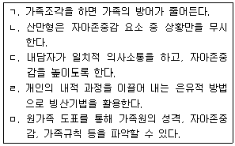
- ㄱ, ㄷ, ㅁ
- ㄴ, ㄷ, ㅁ
- ㄱ, ㄴ, ㄷ, ㄹ
- ㄱ, ㄷ, ㄹ, ㅁ
- ㄱ, ㄴ, ㄷ, ㄹ, ㅁ
(정답률: 알수없음)
73. 전략적 가족상담에 관한 설명으로 옳은 것을 모두 고른 것은?
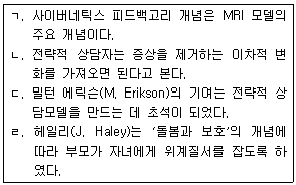
- ㄱ, ㄴ
- ㄱ, ㄷ
- ㄴ, ㄹ
- ㄱ, ㄷ, ㄹ
- ㄴ, ㄷ, ㄹ
(정답률: 알수없음)
74. 이야기치료에 관한 설명으로 옳지 않은 것은?
- 상담자는 탈중심적이고 영향력 있는 위치를 취한다.
- 과거를 재조명하고 삶의 이야기를 다시 쓰도록 한다.
- 문제에 대해 잘 설명하지 못할 때는 체험의 어려움 때문이므로 내담자가 더 이상 이야기하지 않도록 한다.
- 문제를 가져온 상호작용의 패턴에서 벗어나기 위해 문제이야기를 해체한다.
- 내담자의 삶에서 중요한 영향을 주었던 인물을 찾아내어 이야기를 풍성하게 한다.
(정답률: 알수없음)
75. 다음 가계도를 통한 가족역동에 관한 설명으로 옳지 않은 것은?
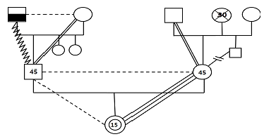
- IP와 모는 친밀한 관계이다.
- 세대 간에 삼각관계가 전수되고 있다.
- IP 모는 남동생과 정서적 단절을 하고 있다.
- IP 모는 불안정한 애착관계를 형성했을 것이다.
- IP 부는 알코올문제를 갖고 있는 아버지와 갈등관계이다.
(정답률: 알수없음)
4과목: 학업상담
76. 맥키치(W. McKeachie)의 학습전략 중 인지전략으로 옳은 것은?
- 계획전략, 시연전략, 노력관리전략
- 시연전략, 정교화전략, 조직화전략
- 점검전략, 조직화전략, 조정전략
- 노력관리전략, 계획전략, 시연전략
- 조정전략, 점검전략, 계획전략
(정답률: 알수없음)
77. 학습상담과 관련된 심리검사에 관한 설명으로 옳지 않은 것은?
- 학업동기검사(AMT)는 크게 학업적 자기효능감 척도와 학업적 실패내성척도로 구성되어 있다.
- 학습태도검사는 학습전략검사에 비해 학습흥미, 학습동기, 학습습관에 더 초점을 두는 경향이 있다.
- ALSA 청소년 학습전략검사는 학습동기, 자기효능감, 학습기술(인지 및 초인지전략), 자원관리기술의 4개 소검사로 구성되어 있다.
- MLST 학습전략검사는 성격적, 정서적, 동기적 차원의 3개 차원으로 구성되어 있다.
- 기초학습기능검사(KEDI-IBLST)는 정보처리, 셈하기, 읽기Ⅰ, 읽기Ⅱ, 쓰기의 5개 소검사로 구성되어 있다.
(정답률: 알수없음)
78. 효과적인 기억력 증진전략에 관한 설명으로 옳지 않은 것은?
- 과(過)학습한다.
- 기억할 정보에 의미 부여를 줄여 단순화한다.
- 암기할 때 기억단서를 사용한다.
- 기억을 방해하는 간섭요인을 최소로 줄인다.
- 학습한 것을 자신의 언어로 반복해서 복습한다.
(정답률: 알수없음)
79. 학습전략에 관한 설명으로 옳은 것을 모두 고른 것은?
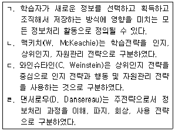
- ㄱ, ㄴ
- ㄷ, ㄹ
- ㄱ, ㄴ, ㄷ
- ㄱ, ㄴ, ㄹ
- ㄱ, ㄷ, ㄹ
(정답률: 알수없음)
80. 길포드(J. Guildford)의 창의적 사고의 인지적 요인이 아닌 것은?
- 유창성
- 유연성
- 정교성
- 독창성
- 지적 호기심
(정답률: 알수없음)
81. 토마스(E. Thomas)와 로빈슨(H. Robinson)이 제안한 PQ4R의 단계와 구체적인 전략의 연결이 옳지 않은 것은?
- 미리보기(Preview) - 요약된 단락을 읽는다.
- 질문하기(Question) - 각 장과 절의 소제목을 의문문으로 변형한다.
- 읽기(Read) - 빠뜨린 정보는 없는지 찾아본다.
- 암송하기(Recite) - 중요한 내용을 소리 내어 읽고 주제 등을 적으며 암기한다.
- 복습하기(Review) - 주어진 자료를 바로 또는 나중에 다시 훑어본다.
(정답률: 알수없음)
82. 학업상담을 위해 실시하는 심리검사의 활용에 관한 설명으로 옳지 않은 것은?
- 검사의 신뢰도와 타당도를 충분히 고려해야 한다.
- 검사의 목적과 한계에 대해 내담자에게 충분히 설명해주어야 한다.
- 검사에서 얻은 정보에 대해서는 비밀보장의 원칙을 준수해야 한다.
- 검사요강에 제시된 표준화된 채점절차를 따라야 한다.
- 일반화 가능성이 높아지도록 평상시와 같이 어느 정도 외부 자극이 있는 곳에서 검사를 실시하는 것이 좋다.
(정답률: 알수없음)
83. 학습효과를 높이는 수면법에 관한 설명으로 옳지 않은 것은?
- 가벼운 운동 후 따뜻한 물에 샤워하면 숙면에 도움이 된다.
- 자신에게 알맞은 수면시간을 찾아 규칙적으로 잠을 잔다.
- 학습의 질을 높이기 위해 충분한 수면을 취한다.
- 수면부족으로 머리가 멍하다면 수면 시간을 조절할 수 있다.
- 15분 정도의 낮잠은 학습 효과에 도움이 되지 않는다.
(정답률: 알수없음)
84. 커크(S. Kirk)와 찰판트(J. Chalfant)가 제안한 학습장애의 하위 유형 중 학업적 학습장애를 모두 고른 것은?
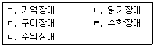
- ㄱ, ㄷ
- ㄴ, ㄹ
- ㄱ, ㄴ, ㄷ
- ㄴ, ㄹ, ㅁ
- ㄴ, ㄷ, ㄹ, ㅁ
(정답률: 알수없음)
85. 효율적인 시간관리 전략에 관한 설명으로 옳지 않은 것을 모두 고른 것은?
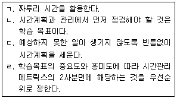
- ㄱ, ㄴ
- ㄴ, ㄷ
- ㄷ, ㄹ
- ㄴ, ㄷ, ㄹ
- ㄱ, ㄴ, ㄷ, ㄹ
(정답률: 알수없음)
86. 노트필기전략에 관한 설명으로 옳은 것을 모두 고른 것은?
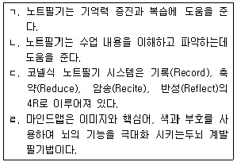
- ㄱ, ㄴ
- ㄷ, ㄹ
- ㄱ, ㄴ, ㄷ
- ㄱ, ㄴ, ㄹ
- ㄱ, ㄴ, ㄷ, ㄹ
(정답률: 알수없음)
87. 정교화 전략의 구체적인 방법이 아닌 것은?
- 브레인스토밍을 통해 창의적인 아이디어를 만들기
- 시각적 청각적 심상을 머릿속에 표상하기
- 구체적인 사례를 제시하기
- 자신이 알고 있는 자료와 연결점을 만들기
- 질문에 답하기
(정답률: 알수없음)
88. 지능에 관한 설명으로 옳은 것은?
- 학업성취와 관련하여 지능은 비중 있게 다루어져 온 정서적 요인이다.
- 지능검사의 결과를 활용할 때 지능에 대한 과대 또는 과소평가를 주의해야 한다.
- 지능검사에는 웩슬러 아동지능검사, 주제통각검사 등이 있다.
- 지능에 대한 학습자의 주관적 관점과 학습태도는 관련이 없다.
- 내담자의 지능지수와 다양한 정보를 함께 활용하는 것은 내담자 이해를 어렵게 만든다.
(정답률: 알수없음)
89. 시험불안에 관한 개입전략으로 옳은 것을 모두 고른 것은?
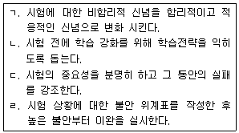
- ㄱ, ㄴ
- ㄱ, ㄷ
- ㄷ, ㄹ
- ㄱ, ㄴ, ㄹ
- ㄴ, ㄷ, ㄹ
(정답률: 알수없음)
90. 매슬로우(A. Maslow)의 욕구위계이론에 따라 내담자의 결핍욕구를 탐색하기 위한 학업상담자의 활동이 아닌 것은?
- 충분한 수면을 취하고 있는지 탐색한다.
- 학교폭력의 피해는 없는지 탐색한다.
- 부모의 이혼 등으로 가정에서의 안정감이 위협받고 있는지 탐색한다.
- 교사와 또래들로부터 인정을 못 받고 있는지 탐색한다.
- 적절한 학습전략을 활용하고 있는지 탐색한다.
(정답률: 알수없음)
91. 발레란드(R. Vallerand)와 비소네트(R. Bissonnette)가 자기결정성의 개념을 바탕으로 구분한 학습동기의 단계에 따른 설명으로 옳지 않은 것은?
- 무기력(Amotivation) 단계 : 학습동기가 전혀 내면화되지 않은 상태이다.
- 외적강압(Extrinsic-external regulation) 단계 : 누군가가 직접적으로 보상을 주거나 통제를 가하면서 구체적인 행동을 지시할 때 행동을 수행한다.
- 유익추구(Extrinsic-identified regulation) 단계 : 알고 이해하고 의미를 추구하려는 욕구에 의해 공부한다.
- 의미부여(Extrinsic-integrated regulation) 단계 : 공부하면서 내적 갈등이나 긴장을 경험하지는 않는다.
- 지적자극추구(Intrinsic-to experience stimulation) 단계 : 흥분되는 학습 내용을 통하여 강렬한 지적 즐거움을 얻기 위해 공부한다.
(정답률: 알수없음)
92. 주의집중력의 정서적 측면인 자기통제력에 관한 설명으로 옳지 않은 것은?
- 자신의 능력에 대한 긍정적인 믿음이 있을 때 더 잘 발휘된다.
- 자신의 행동으로 결과를 변화시킬 수 있다고 믿을 때 더 잘 발휘된다.
- 언어 발달 수준에 영향을 많이 받는다.
- 의미 있는 주변 사람의 반응이 예측 가능하고 신뢰로우면 잘 발달된다.
- 실패하더라도 자존감이 손상되지 않을 것이라는 믿음이 있을 때 더 잘 발달된다.
(정답률: 알수없음)
93. 시험불안에 관한 설명으로 옳은 것을 모두 고른 것은?
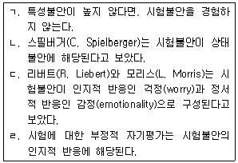
- ㄱ, ㄴ
- ㄷ, ㄹ
- ㄱ, ㄴ, ㄹ
- ㄴ, ㄷ, ㄹ
- ㄱ, ㄴ, ㄷ, ㄹ
(정답률: 알수없음)
94. 특정학습장애에 대한 『정신질환의 진단 및 통계 편람』제5판(DSM-5)의 진단기준에 따른 설명으로 옳지 않은 것은?
- 대부분의 경우 학업적 어려움은 학령기 초기에 분명해지기 시작한다.
- 학업적 어려움은 환경적으로 불리한 조건이나 교육기회의 부족과 같은 일반적인 외부 요인에 의한 것이 아니어야 한다.
- 학업적 어려움은 지적발달장애나 전반적 발달지연에 의한 것이 아니어야 한다.
- 표준화검사 결과와 지능지수 사이에 2 표준편차 이상 차이가 있어야 한다.
- 학습기술을 배우고 사용하는 것의 어려움이 그에 맞는 적절한 중재를 제공했음에도 최소 6개월 이상 지속된다.
(정답률: 알수없음)
95. 와이너(B. Weiner)가 제시한 귀인의 차원에 관한 설명으로 옳지 않은 것은?
- 통제소재에 따른 구분은 성공과 실패의 원인이 학습자의 내부에 있는가, 외부에 있는가를 기준으로 한다.
- 안정성에 따른 구분은 성공과 실패의 원인이 시간의 경과나 과제에 따라 변하는가를 기준으로 한다.
- 통제가능성에 따른 구분은 성공과 실패의 원인이 학습자 자신에 의해 통제 가능한가를 기준으로 한다.
- 사회적 지지에 따른 구분은 학습자의 성공과 실패가 사회적 지지에 따라 달라지는가를 기준으로 한다.
- 통제소재에서 내적 요인으로는 능력, 외적 요인으로는 과제의 난이도를 예로 들 수 있다.
(정답률: 알수없음)
96. 학습장애, 학습지체 등과 구별하여 학습부진을 정의할 때 학습부진의 원인으로 옳지 않은 것은?
- 학습동기의 결여
- 경계선 이하의 지능
- 교사의 낮은 기대
- 공부기술의 부족
- 학습시간의 부족
(정답률: 알수없음)
97. 학업상담의 특징에 관한 설명으로 옳은 것을 모두 고른 것은?
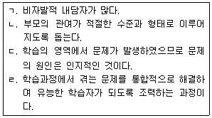
- ㄱ, ㄴ
- ㄷ, ㄹ
- ㄱ, ㄴ, ㄹ
- ㄴ, ㄷ, ㄹ
- ㄱ, ㄴ, ㄷ, ㄹ
(정답률: 알수없음)
98. 학습부진의 요인을 분류할 때, 변화 불가능한 내담자의 개인 내 변인은?
- 기질
- 우울
- 자아개념
- 부모에 대한 지각
- 학교 풍토
(정답률: 알수없음)
99. 학습부진을 겪고 있는 영재아를 위한 일반적인 상담 전략이 아닌 것은?
- 내담자의 영재성을 알아주려는 노력은 하지 않는다.
- 상담 과정에서 가족 및 부모의 참여와 역할을 강조한다.
- 사회성이 훼손된 경우에 또래에게 지지받는 경험을 할 수 있도록 조력한다.
- 영재성으로 인해 받게 되는 주위의 기대로부터 기인하는 스트레스에 적절히 대처할 수 있도록 돕는다.
- 영재성을 보다 정확히 이해하고, 심리적 정보를 얻기 위해 심리검사를 활용할 수 있다.
(정답률: 알수없음)
100. 미스(J. Meece)가 제안한 자녀의 학업동기를 높일 수 있는 의사소통 방법으로 옳은 것을 모두 고른 것은?
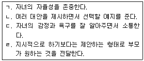
- ㄱ, ㄴ
- ㄷ, ㄹ
- ㄱ, ㄴ, ㄷ
- ㄴ, ㄷ, ㄹ
- ㄱ, ㄴ, ㄷ, ㄹ
(정답률: 알수없음)